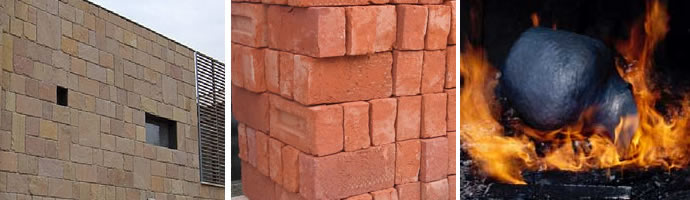
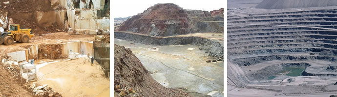

Minerales como recursos
Desde el punto de vista práctico, podemos dividir los minerales en:
- Minerales metálicos: Son aquellos que utilizamos para extraer metales. Por ejemplo, galena (plomo) o pirita (azufre y hierro).
- Minerales no metálicos: Se obtienen diversas sustancias no metálicas, que se transforman para ser utilizadas posteriormente. Por ejemplo, la fluorita se utiliza para la fabricación del ácido fluorhídrico.
Un caso especial son los minerales radioactivos (como la uraninita) que sirven como recurso energético para las centrales nucleares.


Rocas como recursos
Pueden ser usadas como recursos industriales no energéticos o como fuente de energía: Distinguimos:
- Las rocas industriales. Son aquellas que se utilizan directamente o después de sencillos procesos de preparación. La mayoría tiene como destino la construcción: pavimentos de carreteras, revestimientos, fabricación de vidrio, elaboración de cemento, ladrillos, ornamentación, etc.
- Las rocas como recursos energéticos (combustibles fósiles). Es el caso del carbón, petróleo y gas natural. El 80% de los combustibles fósiles que utiliza la humanidad son de estos tres tipos.

Bloques de piedras utilizadas en fachada, arcilla utilizada para ladrillos, carbón utilizado como combustibl
Recursos geológicos
Denominamos recursos geológicos a todos aquellos recursos naturales que se extraen directamente de la Tierra, como los minerales y rocas que se extraen de las diferentes explotaciones.
Explotaciones
Las explotaciones de yacimientos se denominan minas, las cuales pueden ser a cielo abierto si se encuentran en la superficie, o profundas, cuando están a varios metros de profundidad.
Ejemplos de explotaciones a cielo abierto son las canteras y excavaciones. Las primeras extraen las rocas industriales desde la misma superficie.
Las excavaciones son explotaciones poco profundas pero de gran extensión; en ellas se elimina mediante explosivos las capas de roca que recubren el mineral buscado hasta que resulta accesible para su explotación.

Las explotaciones subterráneas son explotaciones de minerales que se encuentran a gran profundidad y que para ser alcanzados se realizan una serie de perforaciones verticales, llamadas pozos, y horizontales, llamadas galerías, que siguen las capas del mineral en el subsuelo. Este tipo de explotación es el que denominamos tradicionalmente mina.
Vídeo
La cal se fabrica calentando piedra caliza a temperaturas elevadas, proceso en el que se desprende dióxido de carbono y se obtiene el óxido de calcio. Si te interesa puedes observar este vídeo sobre del proceso de elaboración artesanal: